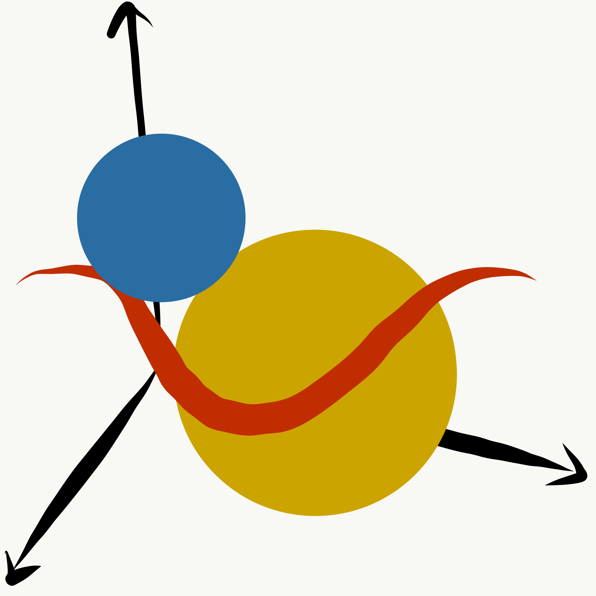

Complex Asteroid shapes in Modeling of Binary Systems
Contact info:
Andres Sepulveda
ags269@nau.edu
Eleanor "Elie" Carlos
ecc226@nau.edu
Reyna Orendain
rio8@nau.edu
Brandon Visoky
bmv59@nau.edu
We are team triaxis and we are working on the project complex asteroid shapes in modeling of binary asteroid systems, supporting dr. grundy and dr. thirouin at lowell observatory. with the use of triaxial ellipsoids in modeling, we hope to create a powerful visualization tool for astronomers to identify and explore the binary asteroid systems in our galaxy, as well as pave the way for even more complex and diverse astronomy problems to be visualized and modeled in the future.